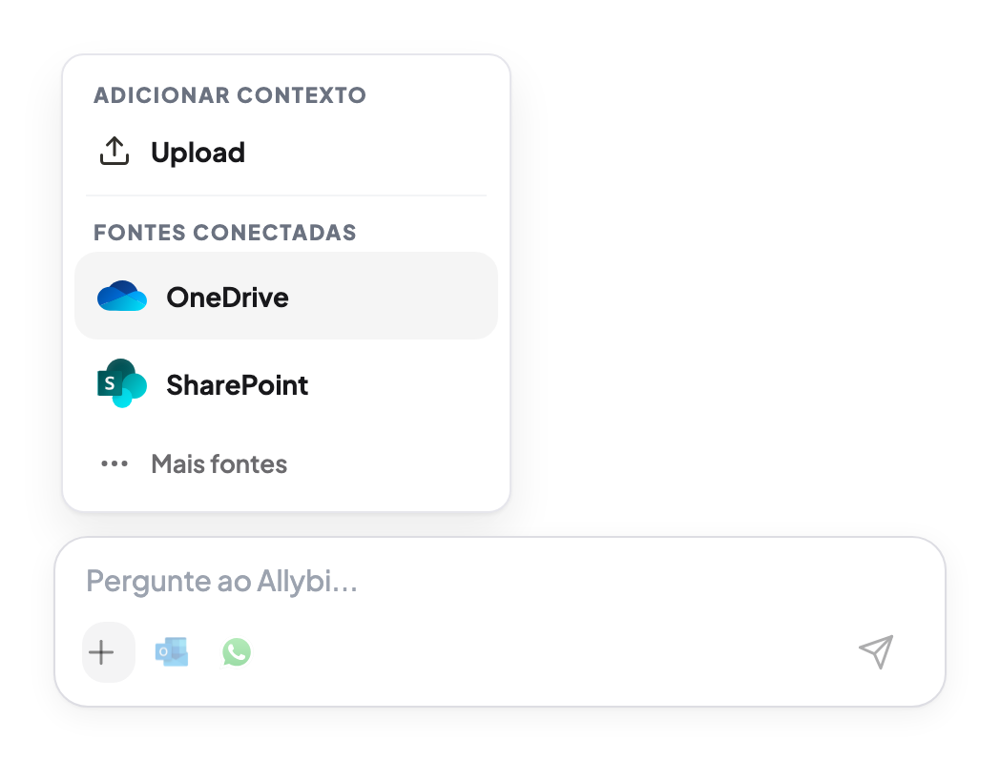

O pedido chega.
O cliente pede a proposta aprovada antes da reunião.

PRODUTO
Pergunte no chat. Veja a fonte. Confirme antes de enviar. Outlook envia. WhatsApp abre como handoff.
Outlook, OneDrive, SharePoint, Google Drive e uploads no mesmo fluxo.
30 dias grátis. Depois R$170/mês. Cancele quando quiser.

ACHAR NÃO BASTA
O pedido chega. A busca passa por e-mail, anexo, pasta, OneDrive, SharePoint e upload.
A busca parte de seis lugares diferentes e converge para a dúvida sobre qual versão pode ser enviada.
DO PEDIDO AO ENVIO
Cinco etapas do momento em que o pedido chega até o envio revisado.


O cliente pede a proposta aprovada antes da reunião.
Pergunte como falaria com alguém do time.

O arquivo aparece junto da origem usada pelo Allybi.

Arquivo, destinatário, mensagem e canal ficam no mesmo lugar.

Outlook fica pronto para enviar. WhatsApp aparece como handoff.

INTEGRAÇÕES
Outlook, OneDrive, SharePoint, Google Drive e uploads entram no chat. Depois da revisão, o e-mail sai pelo Outlook ou o WhatsApp abre como handoff.
ENTRAM NO CHAT

DEPOIS DA REVISÃO
ENTRAM NO CHAT

WHATSAPP HANDOFF
O Allybi prepara a mensagem e o link do arquivo, mas não lê nem sincroniza sua caixa do WhatsApp.
WhatsApp não é uma fonte conectada.
CASOS DE USO
Quando existe pressão, arquivo errado vira risco.
Compare versões, encontre a cláusula exata e leve a fonte para a revisão.
Ver para advogadosVeja o ARR, o período e a origem usada na resposta.
Ver para financeiroEncontre o SOW aprovado, os próximos passos e as fontes usadas.
Ver para operações


JURÍDICO
Antes da revisão do sócio
Compare versões, encontre a cláusula exata e leve a fonte para a revisão.
FINANCEIRO
Antes da reunião do conselho
Veja o ARR, o período e a origem usada na resposta.
OPERAÇÕES
Antes do retorno ao cliente
Encontre o SOW aprovado, os próximos passos e as fontes usadas.
SEGURANÇA
Documentos, perguntas e respostas ficam fora do treino. Cada integração precisa de autorização explícita. Nada sai sem revisão.
Criptografia em trânsito e em repouso. Workspaces isolados por projeto.
PRIVACIDADE
Perguntas, respostas e arquivos ficam fora de qualquer treino.
CONFIRMAÇÃO
Mensagem, arquivo, fonte, destinatário e canal aparecem antes do envio.
PERMISSÕES
Cada integração precisa de autorização explícita e pode ser removida.
O Allybi prepara a mensagem mas não lê nem sincroniza sua caixa.
PREÇO
Um plano para encontrar, confirmar e enviar o documento certo. Cancele quando quiser.
Conecte
Outlook, OneDrive, SharePoint, Google Drive e uploads
Pergunte
Documentos, e-mails, anexos e fontes conectadas
Confirme
Resposta com fonte e comparação de versões
Revise
Mensagem, arquivo, fonte, destinatário e canal
Envie
E-mail via Outlook com confirmação. WhatsApp abre como handoff.
PERGUNTAS COMUNS
O Allybi conecta fontes, recebe uploads e transforma seus documentos em uma conversa. Você pergunta, recebe respostas com fonte, e prepara e-mail ou WhatsApp com revisão antes de qualquer envio.
Sim. Com o Outlook conectado, o Allybi prepara e envia e-mails depois da sua confirmação. Você revisa destinatário, mensagem, fonte e anexo antes de qualquer envio.
Não. WhatsApp funciona como handoff: o Allybi prepara a mensagem e abre o WhatsApp com tudo pronto para você revisar e enviar. Ele não lê nem sincroniza sua caixa.
30 dias grátis. Depois, R$170 por mês. Cancele quando quiser.
Não. Você pode começar o teste grátis agora. Times que querem revisar segurança, permissões ou implementação podem falar com vendas.
Você revisa conteúdo, arquivo, fonte e destinatário. Nada sai sem sua confirmação.
Não. Documentos, perguntas e respostas não são usados para treinar modelos.
Hoje: Outlook, OneDrive, SharePoint, Google Drive e uploads de arquivos. Gmail entra em seguida.
COMEÇAR
Conecte uma fonte ou suba um arquivo. Pergunte no chat, veja a fonte e revise antes de enviar.
Nada sai sem confirmação. Documentos não treinam modelos.
Cancele quando quiser.